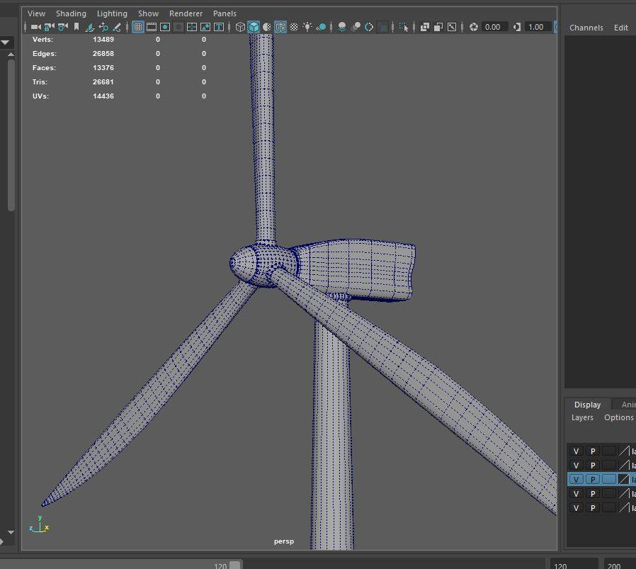

Son Enerxía é o nome da empresa municipal eléctrica de Porto do Son que presenta Balbino González. A construcción de infraestructuras enerxéticas renovables conta co apoio da Unión Europea, que costea ata o 85% dos equipamentos eléctricos sen emisións de CO2.
Porto do Son precisa máis de 6 mega Watios de enerxía para cubrir as necesidades eléctricas do concello, o que se traduce nunha factura eléctrica municipal superior a 1 millón de euros anuais. Ca instalación dun só aeroxerador, produciríamos 3 mega Watios de potencia, a metade do consumo eléctrico. O aforro duns 500.000 euros servirá para a mellora dos servizos e que os veciños paguen menos.
Tamén os equipamentos solares a instalar nos edificios públicos están dentro do plan de enerxético municipal.
